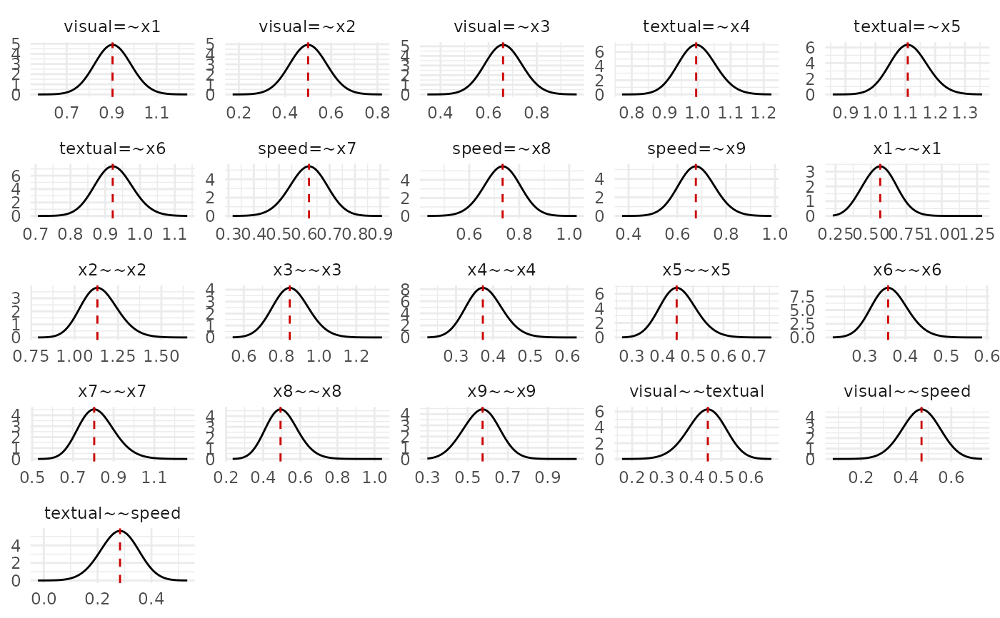
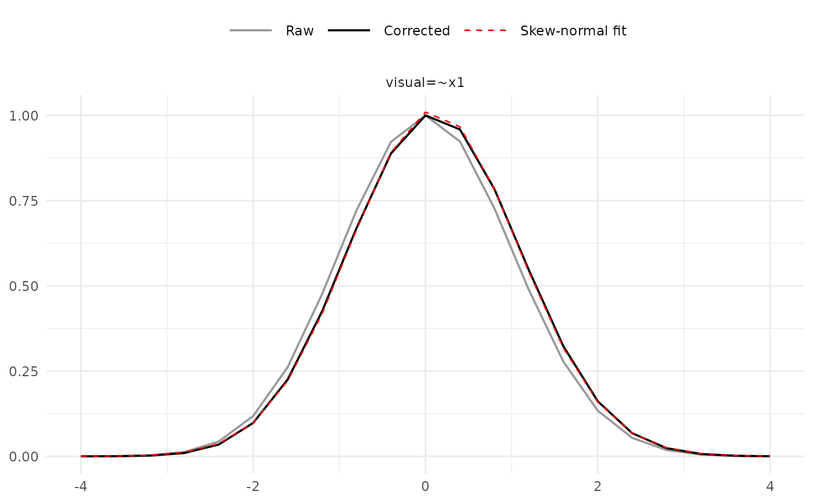

Generates diagnostic plots for a fitted INLAvaan model.
Usage
# S4 method for class 'INLAvaan,ANY'
plot(
x,
y,
type = c("marg_pdf", "sn_fit", "sn_fit_log"),
params = "all",
nrow = NULL,
ncol = NULL,
use_ggplot = TRUE,
points = FALSE,
...
)Arguments
- x
An object of class INLAvaan.
- y
Not used.
- type
Character. One of
"marg_pdf"(default; posterior marginal densities),"sn_fit"(skew-normal fit diagnostic on natural scale), or"sn_fit_log"(same on log scale).- params
Character vector of parameter names to plot, or
"all"(default) to plot all free parameters.- nrow, ncol
Integer. Number of rows/columns for the facet grid when
use_ggplot = TRUE. IfNULL(default), layout is chosen automatically.- use_ggplot
Logical. When
TRUE(default) and ggplot2 is available, a ggplot2 object is returned. Set toFALSEfor a base-R plot.- points
Logical. When
TRUE, individual grid points are overlaid on the curves. Defaults toFALSE.- ...
Additional arguments (currently unused).
Examples
# \donttest{
HS.model <- "
visual =~ x1 + x2 + x3
textual =~ x4 + x5 + x6
speed =~ x7 + x8 + x9
"
utils::data("HolzingerSwineford1939", package = "lavaan")
fit <- acfa(HS.model, HolzingerSwineford1939, std.lv = TRUE, nsamp = 100,
test = "none", verbose = FALSE)
# Posterior marginal densities (default)
plot(fit)

# Skew-normal fit diagnostic for a single parameter
plot(fit, type = "sn_fit", params = "visual=~x1")

# }